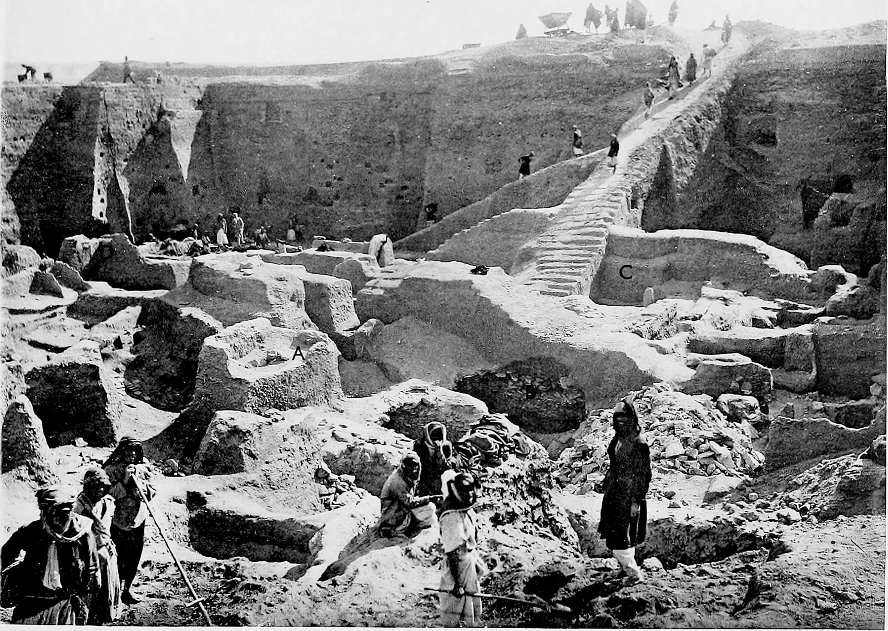
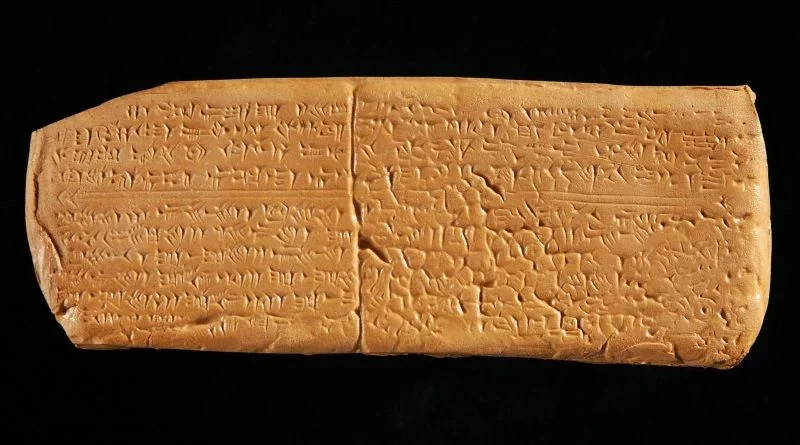

Hitos importantes
- Leé esta página entera.
- Respondé en voz alta las preguntas del final y anotá lo que te costó en ✎ Mis notas.
Objetivo: repasar los hitos concretos (objetos, descubrimientos, eventos) que marcan la música antigua, con el contexto de cada uno.
Las flautas de Hohle Fels y Geissenklösterle (35.000-40.000 a.C.)
En las cuevas de Hohle Fels y Geissenklösterle, en el sudoeste de Alemania, arqueólogos de la Universidad de Tubinga encontraron flautas talladas en hueso de buitre y en marfil de mamut, con entre 3 y 5 agujeros perforados a mano, espaciados de forma no aleatoria (es decir, alguien eligió dónde poner cada agujero para lograr notas concretas). Son, hasta el día de hoy, los instrumentos musicales más antiguos confirmados del mundo. El hito importa porque demuestra que la capacidad de crear música con intención —no ruido al azar, sino un objeto diseñado para producir notas específicas— es tan antigua como el arte rupestre y mucho más antigua que la agricultura.
El Arpa de Ur (~2500 a.C.)

Hallada por el arqueólogo Leonard Woolley en las excavaciones del Cementerio Real de Ur (Mesopotamia, actual Irak) entre 1922 y 1934, junto a otras liras y arpas en tumbas reales. Una de ellas, conocida como la "Lira del Toro de Oro", tenía una cabeza de toro decorada con oro y lapislázuli. El hallazgo importa por dos motivos: primero, porque confirma que los instrumentos de cuerda complejos (con cajas de resonancia elaboradas y múltiples cuerdas afinadas) ya existían hace 4500 años; segundo, porque el hecho de enterrarlos junto a la realeza muestra el altísimo valor simbólico y religioso que tenía la música en esa cultura.
La tablilla de afinación de Nippur (~1800 a.C.)
Una tablilla cuneiforme sumeria que contiene, por lo que se puede reconstruir, instrucciones para afinar un instrumento de cuerda (probablemente un arpa o una lira) nombrando intervalos musicales mediante términos técnicos sumerios. Importa porque es evidencia de que ya existía, mucho antes de Pitágoras, un vocabulario técnico específico para describir relaciones entre notas: la teoría musical no nació en Grecia, Grecia la sistematizó y la llevó a otro nivel, pero la idea de describir con palabras precisas cómo afinar un instrumento ya estaba en Mesopotamia.
El Himno a Nikkal (tablilla h.6 de Ugarit, ~1400 a.C.)

Encontrada en las excavaciones de Ras Shamra (antigua Ugarit, en la costa de Siria) en los años 1950, es una tablilla cuneiforme en lengua hurrita que combina una letra religiosa dedicada a la diosa de la luna Nikkal con lo que parecen ser notaciones de intervalos musicales. La musicóloga Anne Kilmer propuso en los años 70 una reconstrucción de la melodía, que hoy se puede escuchar en varias versiones grabadas (están en la guía de escucha de esta fase). Es importante aclarar que la interpretación exacta de esa notación sigue siendo objeto de debate académico: no todos los musicólogos están de acuerdo con la reconstrucción de Kilmer. Aun con esa incertidumbre, es el documento más antiguo del mundo que combina letra y notación musical de forma reconocible.
Los Juegos Píticos de Delfos y la institucionalización de los agones musicales (582 a.C.)
A partir del 582 a.C. los Juegos Píticos, en honor a Apolo, en el santuario de Delfos, incluyeron de forma oficial competencias musicales (de canto con kithara, de aulos solo, de kithara sola) junto con las pruebas atléticas. Esto marca un hito porque institucionaliza algo que hasta entonces era más informal: la idea de que la música es un arte que se puede juzgar, premiar y comparar en una competencia pública, con jueces y reglas, igual que el atletismo. Es, en cierto sentido, el antecedente más lejano de cualquier concurso musical de hoy.
La fundación de la Academia de Platón y el tratado "La República" (~387 a.C.)
El libro VII de "La República" de Platón contiene la discusión más influyente de la Antigüedad sobre la doctrina del ethos musical (lección 1.3): qué modos musicales deben permitirse en la educación de los futuros gobernantes y cuáles hay que prohibir porque corrompen el carácter. Este texto va a ser citado y discutido durante más de dos mil años, incluso por teóricos medievales y renacentistas, como la referencia filosófica obligada sobre el poder moral de la música.
"De institutione musica" de Boecio (~500 d.C.)
Escrito por el filósofo romano Boecio, poco antes de su ejecución por orden del rey ostrogodo Teodorico, este tratado traduce y sistematiza en latín la teoría musical griega (incluidas las ideas de Pitágoras sobre los intervalos). Se convirtió en el libro de texto de música obligatorio en las universidades medievales durante casi mil años, y es el puente directo entre la teoría musical de la Antigüedad y la que vas a estudiar en la Fase 2 (Música medieval). Marca, de hecho, el cierre simbólico de esta fase y la apertura de la siguiente.
Preguntas de repaso
- ¿Por qué las flautas de Hohle Fels son un hito tan importante, más allá de ser "viejas"?
- ¿Qué muestra el hecho de que se enterraran arpas y liras junto a la realeza en Ur?
- ¿Qué demuestra la tablilla de afinación de Nippur sobre el origen de la teoría musical?
- ¿Por qué sigue siendo discutida la reconstrucción del Himno a Nikkal?
- ¿Qué cambia en la cultura griega a partir de la institucionalización de los agones musicales en Delfos?
- ¿Por qué el libro de Boecio es considerado la bisagra entre la Antigüedad y la Edad Media?
Respuestas
- Porque demuestran que la capacidad de crear música con intención (agujeros ubicados a propósito para producir notas específicas, no al azar) es tan antigua como el arte rupestre, y anterior a la agricultura, la escritura o la rueda. No es solo un objeto viejo: es evidencia de pensamiento musical deliberado hace entre 35.000 y 40.000 años.
- Muestra que la música tenía un valor simbólico y religioso altísimo, comparable al de otros objetos de prestigio (oro, lapislázuli) que también se enterraban con la realeza. Enterrar un instrumento con un rey o una reina era una forma de asegurar que esa música (y lo que representaba) lo acompañara en la otra vida.
- Demuestra que la teoría musical, entendida como un vocabulario técnico preciso para describir relaciones entre notas, no nació con Pitágoras en Grecia: ya existía en Mesopotamia siglos antes. Grecia la sistematizó y la llevó a un nivel filosófico y matemático más alto, pero no la inventó de cero.
- Porque el sistema de notación cuneiforme en el que está escrita no se interpreta con un cien por ciento de consenso entre los musicólogos: la reconstrucción de Anne Kilmer es la más conocida y la más usada en grabaciones, pero no todos los especialistas coinciden con su lectura de los signos, así que la melodía exacta sigue siendo, en parte, una hipótesis.
- Se instala la idea de que la música es un arte que se puede juzgar, comparar y premiar en una competencia pública con jueces y reglas, de la misma forma que el atletismo. Es el antecedente más lejano de cualquier concurso musical actual, y confirma el estatus de la música como disciplina formal, no solo como entretenimiento espontáneo.
- Porque Boecio tradujo y sistematizó en latín la teoría musical griega (incluidas las ideas de Pitágoras), y ese libro se convirtió en el manual obligatorio de música en las universidades medievales durante casi mil años. Es, literalmente, el texto que lleva el conocimiento musical de la Antigüedad hacia la Edad Media.